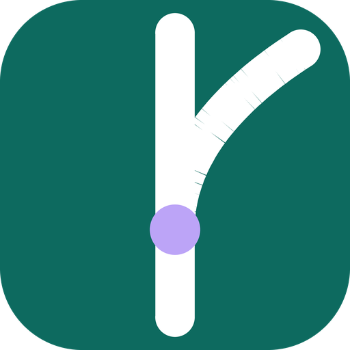

Brand board — generated assets, rendered in-browser
Monochrome variant shown via CSS mask-image
— currentColor cannot inherit into an <img>-loaded SVG, so inline the
SVG or mask it.

Space Grotesk — Display 700
Inter — Body 400. Route work onto the right track.
Inter — Body 600. Sprint 14 closes Friday.
JetBrains Mono — SY_API_BASE_URL=https://switchyard.apps.moon.nzero.pro